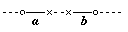

HOME
TOP
UP
PREV
NEXT
ENGLISH
MAP
Logisch-philosophische Abhandlung 6.36111
- 6.36111
-
Das Kant'sche Problem von der rechten und linken Hand, die man nicht
zur Deckung bringen kann, besteht schon in der Ebene, ja im eindimensionalen
Raum, wo die beiden kongruenten Figuren a und b auch nicht
zur Deckung gebracht werden können, ohne aus diesem Raum hreausbewegt zu
werden.

Rechte und linke Hand sind tatsächlich vollkommen kongruent, Und daß man
sie nicht zur Deckung bringen kann, hat damit nichts zu tun.
Den rechten Handschuh könnte man an die linke Hand ziehen, wenn man
ihn im vierdimensionalen Raum umdrehen könnte.
HOME
TOP
UP
PREV
NEXT
ENGLISH
MAP
Logisch-philosophische Abhandlung 6.36111